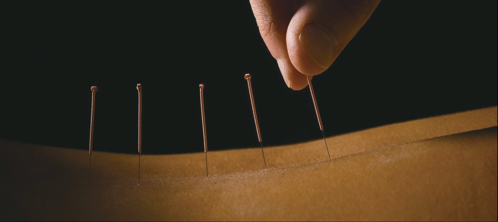
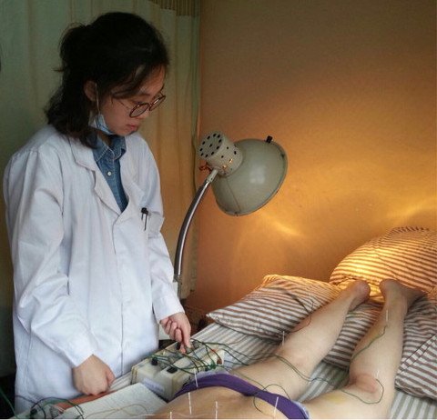
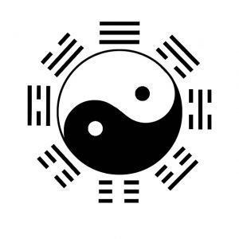

How Chinese People Think of Traditional Chinese Medicine?
Do people in China really believe in traditional Chinese medicine and what’s their impression on it?
Do people in China really believe in traditional Chinese medicine and what’s their impression on it?
Background information of TCM
Traditional Chinese Medicine (TCM), a style of traditional medicine which built up its foundation around 2800 years ago and are widely used in China, meanwhile spread its popularity outside the country to worldwide.

TCM encompasses many different practices, including acupuncture, moxibustion (burning an herb above the skin to apply heat to acupuncture points), Chinese herbal medicine, Tui Na (Chinese therapeutic massage) and dietary therapy. China is a country that pays attention to tradition. Traditional Chinese medicine was the only choice for the Chinese people for a long period of time when medical conditions are underdeveloped. However, as the economy in China gradually develops and the western medicine system gradually enters China, will people continue to choose traditional Chinese medicine? We analyzed tens of thousands of data from news, Weibo, or government reports to analyze how did the impression of TCM changed in the past 10 years.
Distribution of TMC's popularity by reigon
This is a graph we got after we collect and analysis the location of 7,000 followers of the top ten popular Traditional Chinese Medicine Weibo bloggers.
Among 22 provinces, 5 Autonomous Regions and 2 Municipalities in China. Guangdong, Beijing, Shandong, Jiangsu and Henan province rank the top 5 province/city where TCM is popular. As Hong Kong is geographically connected with Guangdong province and the cultural background is similar, it can be concluded into Guangdong in this research. "Guangdong people has use Chinese medicine to cure illness long in history, especially rheumatism, a kind of illness which has the highest incidence in Guangdong due to the wet weather." Xi Chen, a year 4 student studies traditional Chinese medicine in Hong Kong Baptist University, born and raised in Shenzhen (a city in Guangdong province), "People in Guangdong care and pay a lot of attention to regimen (Health-Preservation), like they love to drink herbal tea. And Guangdong has the largest number of herbal tea shops when many other provinces even do not have one. Guangdong people regard herbal tea as a healthy drink in someway just like they love making soup for a healthcare use. Meanwhile, as far as I know, acupuncture is becoming more and more popular abroad."
As for Beijing, a lot of famous Chinese medicine stores are originated from there with a long history, such as Tongrentang and Tongjitang. They sell raw medicinal materials and Chinese patent medicine. And its development results from the history background of Beijing, it's the capital for China since ancient time and before western medical technique was introduced in China, people can only cure themselves by TCM.
People's impression on TCM
While even nowadays in China, for the majority of people who got sick, the first words come to their mind is western medicine. Then, what's Chinese people's impression on TCM? For ten years (from 2007 to 2017), within a sample randomly selected from Wisenews for total 6000 articles related to TCM and 600 articles per year, graphic1.1 illustrates the 10 words that most used in news title.
We can see that, although TCM has a "traditional" in its name, its progression of development never stops. A strong evidence is the owner of 2015 Nobel Prize in Physiology or Medicine, Tu Youyou, who used a western medical technical way to discover artemisinin, a Chinese medicine which can help against Malaria. Meanwhile artemisinin is cheap and easy to grow. That's also the reason why the word "You" (the owner's name) and "Chinese & Western" shown with a high frequency in news title.
In graphic 1.2, it shows the change of appearing times for the top 4 words from 2007 to 2017. "Development" always rank top and all of them have a palpable increase within 10 years.
While one interesting thing is, Guangdong is the province where people like TCM most, but Gansu province has the highest frequency of occurrence in news title. "Gansu province has a lot of precious medicinal material, especially for regimen. In this way, people who care about regimen would search those medicine and many relative pharmacies are located in Gansu." Said Xi Chen.
Weibo, the most popular social media platform in mainland China. The word cloud below describes the 100 characters that are related to TCM and appear most often on Weibo. (from 2010 to 2017) *Note that the bigger the character is, the higher the frequency is.
After analyzing the contents of 7600 posts on Weibo, we found that Heal, health, patient, Chinese & Western and research are the five biggest words in the picture. Despite those regular words used in TCM, like cure, health and research. Diabetes appears a lot. "Curing diabetes is a difficult task not only for TCM but also for western medicine, while controlling it is not a difficult task for traditional Chinese medicine. and many people prefer to use it instead of the western way. But not all the diabetes patients can be controlled by us as there are different types and stages of diabetes." Said Xi Chen.
At the same time, another high-frequency word Chinese & Western seems to reveal another impression that people have on TCM. Usually, Chinese & Western means the combination of two ways, while it can also refer to the comparison between the two. "Special", this word always related to some folk prescription for difficult miscellaneous diseases. It is actually an unreliable way of curing disease without any scientific evidence, but it's quite popular among people, especially in rural areas. On the other hand, the word "special" can also refer to some innovative Chinese medicine or some unique way of curing created by a doctor or TCM hospital.
The highest vocabulary also reflects people's traditional impressions of traditional Chinese medicine. "Shijia", "grandfather" and "fourth generation", the longer the history of Chinese medicine clinics, the old Chinese medicine, can make patients believe the doctor's ability. In comparison, Western medicine seems to be more "new" and lacks historical details.
What's more, the word "prostate" also rank in top 50 for the frequency of appearance. Even nowadays, there are still a large amount of male patients are afraid and ashamed to see a doctor in hospital for the prostate issue, they prefer to believe in some special TCM way to solve their problem. Because once you're in a western medicine hospital, you have to do the body check and may being found by your colleagues that you're seeing a doctor for prostate. But if you ask help from a TCM, there is no need to do private part check and you just need to describe your feelings to the TCM.
The following are the six most frequent words in the Weibo content related to Chinese medicine every year from 2012 to 2017. It can be seen that when looking for traditional Chinese medicine or prescriptions, people are more willing to believe the recommendation of others. At the same time, TCM is also the first choice for people to cure chronic diseases for a long time. Just like this, the incidence of "cough" will be so high. In addition, almost every year, "in flame" (suffer from excessive internal heat) will appear on the list. This disease, which exists only in the Chinese medicine system, is naturally willing to choose Chinese medicine to treat it.
TCM is more like an experiential subject, seems to lack of some experimental mathematics. Saying about TCM is a kind of superstition never stop. "For me, I really doubt the reliability for some theory raised by the traditional Chinese medicine," said Jie Deng, a 26-year-old designer whose father is an experienced western medicine. "Especially some medicines without actual experimental evidence, just follow the curing example which happened in the ancient time, so I never believe it."
Case analysis in Hong Kong
In order to analyze the correlation between western medicine and TCM, Hong Kong has been selected as a research target because. All data below are from the industry report released by Hong Kong government.
When people in Hong Kong got sick, the majority of them first choose to see a western medicine. And the difference for the percentage shown above is quite large. This may due to most of the public or governmental hospitals are set with western medicines. But in total, TCM has a small increase from 15.4% to 18.8% within 10 years.
An obvious peak for TCM in year 2013 mainly result from the financial and political support from the government in 2012.
In 2012, Hong Kong government publish a policy for education that, students in Hong Kong can enter mainland's university to study TCM without test. The government also set up the Chinese Medicine Development Committee and mentioned will support and increase the number of TCM hospital or clinic in the financial budget. While in the financial budget for 2014, there is no mentioned financial support for TCM.
But the reason behind the fall after peak from 2013, can be mainly concluded for people not satisfied with TCM, or lack of government's support. Meanwhile, a report released by the government 's healthcare planning and development office, shows that in 2017, surplus TCM staff counts for 716 people, took 10% of the total number of full-time TCM in Hong Kong.
Dr. Cheng Ho Tik, a traditional Chinese medicine graduated from Hong Kong Baptist University and finish its doctor degree in mainland China. Now open his own TCM clinic in Hong Kong.
Interview video
The controversy over the effectiveness of Chinese medicine seems never to stop, but from the data we analyzed, whether it is the followers or opponents of Chinese medicine, it seems that in terms of quantity, it has not changed too much in the past two decades. Supporters still support, opponents still opposed However, it is undeniable that the traditional way of inheriting Chinese knowledge is blocking the progress and inheritance of Chinese medicine. How to verify and develop Chinese medicine through scientific methods, and to get rid of the impression that Chinese medicine is "not scientific" in the minds of some Chinese people, Chinese medicine still has a long way to go.
References:
1. Thematic Household Survey. Report No. 30
2. Thematic Household Survey. Report No. 41
3. Thematic Household Survey. Report No. 45
4. Thematic Household Survey. Report No. 50
5. Thematic Household Survey. Report No. 58
6. 急性气管-支气管炎中医诊疗指南 ( 2015 版) 中华中医药学会肺系病分会
7. 《青蒿素及其衍生物太赫兹指纹谱的测试与认定》 《光谱学与光谱分析》2017年 第10期 | 马品 杨玉平 张振伟 张存林
#You may click the green button on the bottom right corner to re-read this article
Copyright © 2018 - All Rights Reserved - Enson & Only